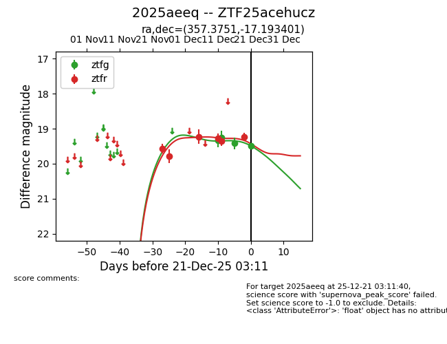
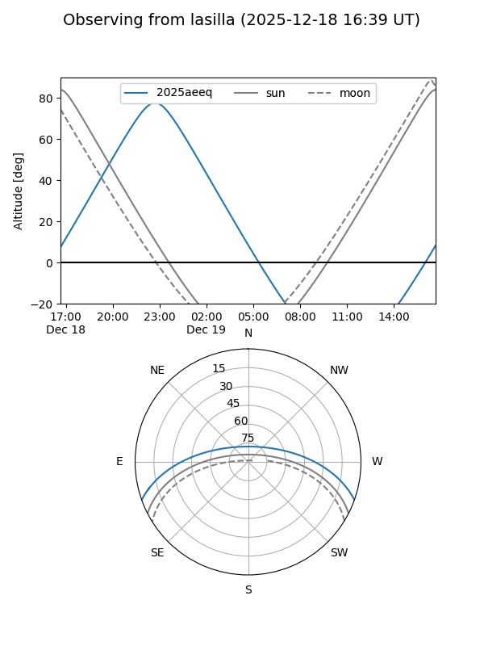
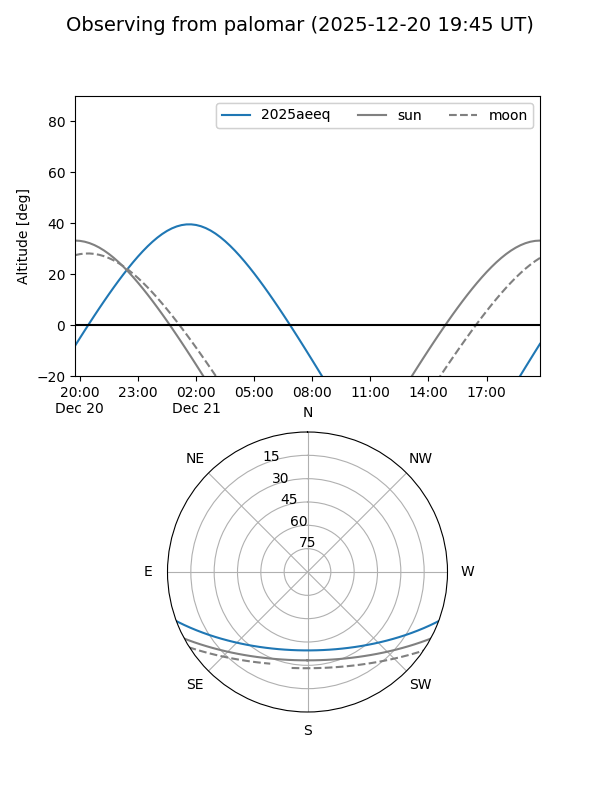
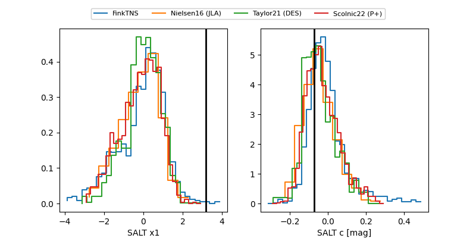

2025aeeq
Target 2025aeeq at 2025-12-18 11:17
Aliases and brokers:
FINK: fink-portal.org/ZTF25acehucz
Lasair: lasair-ztf.lsst.ac.uk/objects/ZTF25acehucz
ALeRCE: alerce.online/object/ZTF25acehucz
TNS: wis-tns.org/object/2025aeeq
YSE: ziggy.ucolick.org/yse/transient_detail/2025aeeq
alt names
ZTF25acehucz (ztf,fink_ztf)
2025aeeq (tns,yse)
Coordinates:
equatorial (ra, dec) = 357.3751,-17.19340
equatorial (HMS+DMS) = 23:49:30.03,-17:11:36.24
galactic (l, b) = (64.5014,-72.58166)
Photometry
last ztfg=19.42, ztfr=19.35
3 ztfg, 5 ztfr detections
Lightcurve

Visibility


Additional plots
